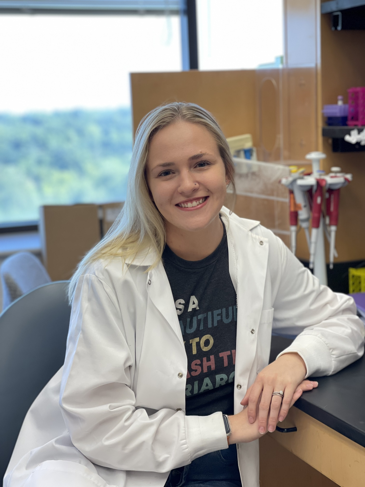

About me
I recently defended my PhD dissertation in Cancer Biology in the Pasca di Magliano Lab at the University of Michigan. My research focuses on premetastatic niche formation during pancreatic cancer progression using mouse modeling and large single cell RNA sequencing datasets.
Soon I will be starting a post doctoral fellowship the Fertig Lab.
at the University of Maryland, Baltimore to continue honing my bioinformatics skills.
First Author Publications
Lasse-Opsahl EL, Barravecchia I, McLintock E, Lee JM, Ferris SF, Espinoza CE, Hinshaw R, Cavanaugh S, Robotti M, Rober L, Brown K, Abdelmalak KY, Galban CJ, Frankel TL, Zhang Y, Pasca di Magliano M, Galban S. KRASG12D drives immunosuppression in lung adenocarcinoma through paracrine signaling. JCI Insight. 2025 Jan 9;10(1):e182228. doi: 10.1172/jci.insight.182228.
Publications
Steele NG, Sirihorachai VR, Elhossiny AM, Loveless IM, Kadiyala P, Bonilla M, Lasse-Opsahl EL, Solano Vargas C, Donahue KL, Kemp SB, Gunchick V, Shah YM, Frankel TL, Bednar F, Rao A, Allen BL, Shi J, Sahai V, Crawford HC, Carpenter ES, Pasca di Magliano M. Primary and metastatic cellular landscapes in human pancreatic cancer. iScience. 2025 Jun 26;28(8):113012. doi: 10.1016/j.isci.2025.113012.
Zhang ZY, Li Q, Bai Y, Cavender SM, Miao Y, Nguele Meke F, Lasse-Opsahl EL, Zhu P, Doody GM, Tao WA. The PRL2 Phosphatase Upregulates miR-21 through Activation of the JAK2/STAT3 Pathway to Downregulate the PTEN Tumor Suppressor. Biochem J. 2024 Dec 12:BCJ20240626. doi: 10.1042/BCJ20240626.
Donahue KL, Watkoske HR, Kadiyala P, Du W, Brown K, Scales MK, Elhossiny AM, Espinoza CE, Lasse Opsahl EL, Griffith BD, Wen Y, Sun L, Velez-Delgado A, Renollet NM, Morales J, Nedzesky NM, Baliira RK, Menjivar RE, Medina-Cabrera PI, Rao A, Allen B, Shi J, Frankel TL, Carpenter ES, Bednar F, Zhang Y, Pasca di Magliano M. Oncogenic KRAS-Dependent Stromal Interleukin-33 Directs the Pancreatic Microenvironment to Promote Tumor Growth. Cancer Discov. 2024 Oct 4;14(10):1964-1989. doi: 10.1158/2159-8290.CD-24-0100.
Velez-Delgado A, Donahue KL, Brown KL, Du W, Irizarry-Negron V, Menjivar RE, Lasse Opsahl EL, Steele NG, The S, Lazarus J, Sirihorachai VR, Yan W, Kemp SB, Kerk SA, Bollampally M, Yang S, Scales MK, Avritt FR, Lima F, Lyssiotis CA, Rao A, Crawford HC, Bednar F, Frankel TL, Allen BL, Zhang Y, Pasca di Magliano M. Extrinsic KRAS Signaling Shapes the Pancreatic Microenvironment Through Fibroblast Reprogramming. Cell Mol Gastroenterol Hepatol. 2022;13(6):1673-1699. doi: 10.1016/j.jcmgh.2022.02.016.